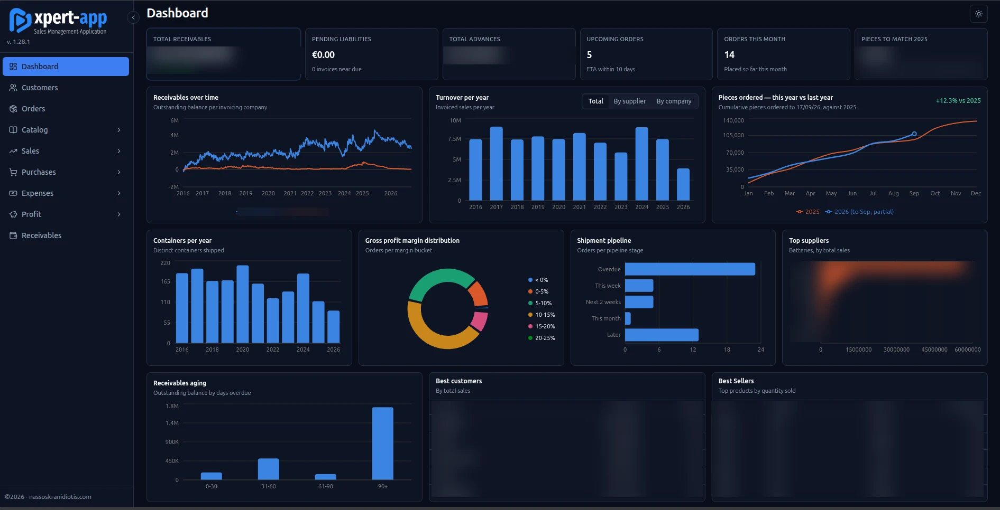

Physicist · Software engineer · Poet
orbits around the Sun · Athens, Greece
scroll
Physicist · Software engineer · Poet
orbits around the Sun · Athens, Greece

Nassos Kranidiotis
IT Specialist · Athens, Greece
My name is Nassos Kranidiotis. I am an IT specialist with over 20 years of experience across software development, system architecture, and academic research.
 orcid.org/0009-0001-8508-1414
orcid.org/0009-0001-8508-1414

A modern web application designed to streamline and manage key commercial operations for small to mid-sized businesses. Built with Python and Streamlit, it provides an intuitive, responsive interface for essential business workflows.
Python implementation of the Particle Swarm Optimization (PSO) algorithm with Constraint Programming, applied to the Sports Timetabling Problem as part of my M.Sc. thesis research.
ASP.NET C# web application for managing business operations, customer records, and commercial workflows.
WPF desktop application offering an integrated suite of tools for inventory, sales, and business administration.
WPF desktop application for comprehensive business management, covering contacts, tasks, and operational records.

Special topics on Information Technology from my Master's Degree studies — read here.

My thoughts and poems, written since 1993, published on Moments In Time — visit here.